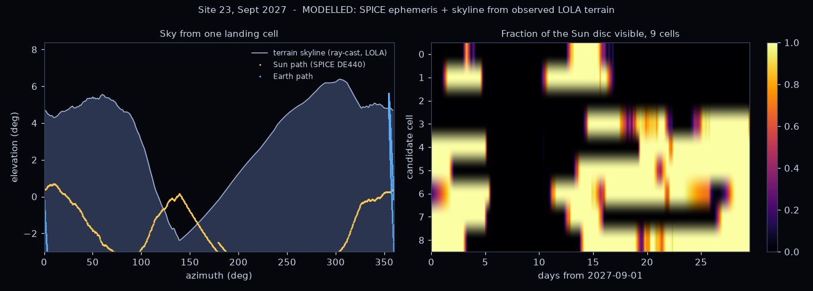
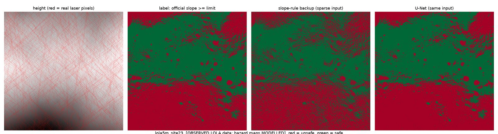
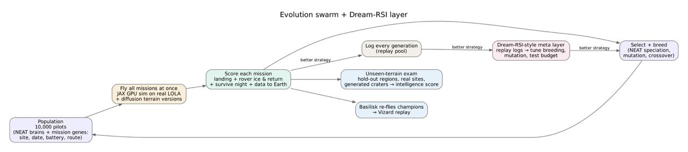

Product
Adinfinitium Navigator
Choose the landing cell and the date, then fly the mission thousands of times before flight.
The Navigator picked the landing cell on Site 23 for 17 March 2027; flown 512 times each in simulation, the pilot landed 99.6 % and classic guidance 99.0 % there (difference not significant; a rehearsal of one planned cell, not an exam).
Simulation and model evaluation on NASA LOLA terrain · all benchmarks · limits
Where, and when.
At the lunar south pole the Sun circles the horizon. Navigator scores every landing cell and landing hour on light, Earth link and terrain hazard.

runs/light/eval.json
runs/hazard/eval.jsonWatch it learn.
The same 960 simulated descents on real NASA LOLA terrain, flown with no guidance, classic guidance and the AI pilot, with the training curves behind them.
960 simulated descents, Site 06
no guidance 0 / 320classic guidance 314 / 320AI pilot 315 / 320the chosen path
Source: runs/ghosts_web/lander_lola5m_site06.json · modelled, failures injected at raised rates
Mission control
Replay one simulated landing and one rover drive, second by second: altitude, speed, battery, sunlight and the decision log.
Open mission control →
What ships: the Navigator ranking.
We trained a planner to rank landing cell × date. On held-out Site 23 it did not beat the simple Navigator ranking, so the ranking ships and the planner stays in research.
Source: results_pc/extracted/runs/planner/eval.json, test split (Site 23, 7 dates, 672 candidates) · modelled · full benchmark table
What each ranking puts first: one Site 23 world
Source: assets/examples/planner/planner_examples.json (checkpoints 72b76466c7, 62b6dba29b; read-only) · modelled
The swarm: designed, not yet run.
An evolving population of mission strategies, scored on landing, rover return and data to Earth, and tested on unseen terrain. The code is written and tested; the first real run is next on our roadmap, so there are no swarm results yet.
